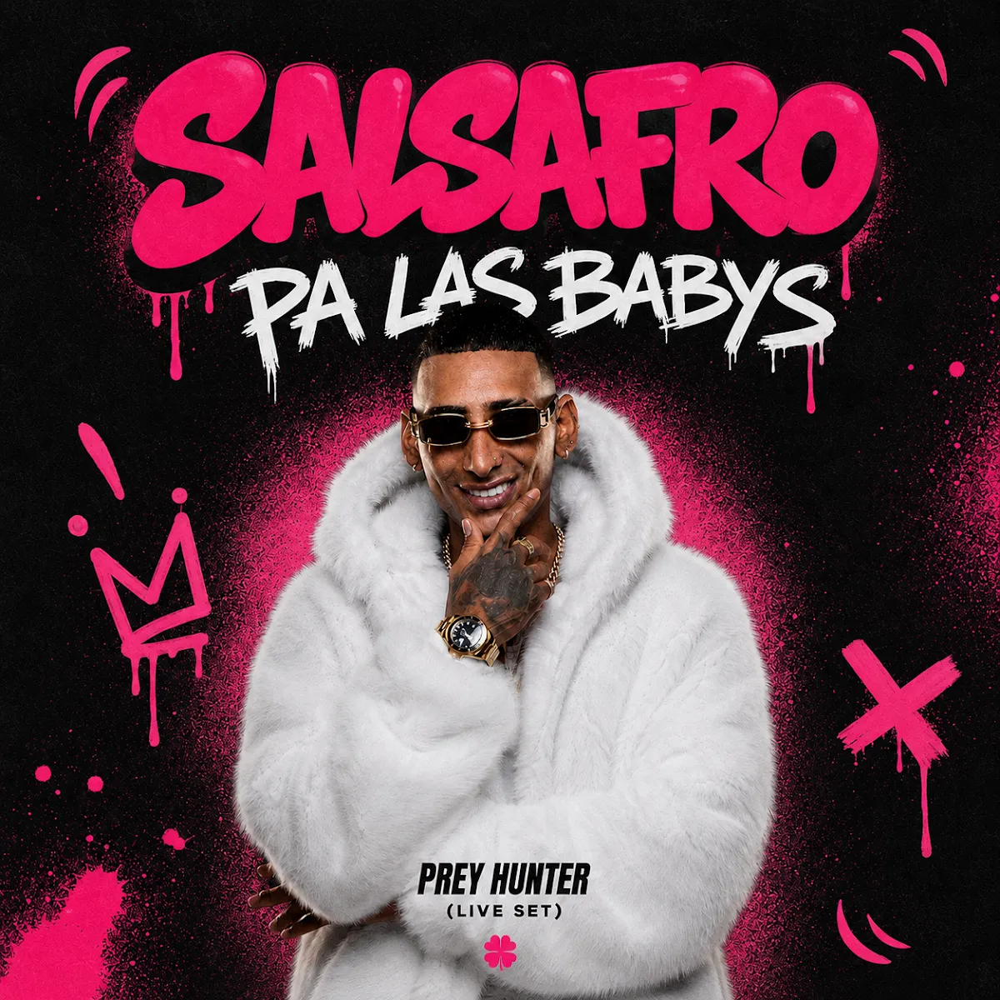

Cali · Pacífico colombiano · Desde 2026
Afro House
con salsa
y tambor
Salsafro es la fusión creada por Prey Hunter: el club se encuentra con la marimba, el piano montuno y los cununos del Pacífico.
Las cuatro raíces
Un sonido que
tiene origen
Los ritmos son identidad, nunca adorno: Salsafro nombra a los músicos y a las raíces cuando las usa.
Tienda oficial
Música para
llevarte
16 canciones en descarga de alta calidad. Pagas en Bandcamp con tarjeta o PayPal; el precio es el mínimo en dólares.
Ver toda la tienda ↗
Set insignia
SALSAFRO 2.0
Del currulao al drop: un viaje continuo de Afro House con metales, marimba y percusión del Pacífico, pensado para la pista.
El sello
Salsafro Records
¿Haces Afro House con raíz latina o del Pacífico? Envía tu demo: un enlace privado de escucha, tu nombre artístico, ciudad y redes. Escuchamos todo lo que llega.
Enviar mi demoLanzamientos Salsafro
Booking
Salsafro
en vivo
Elige el formato y agrégalo a tu solicitud. Con percusión en vivo sumamos tarima para el percusionista y 3 canales extra en consola.